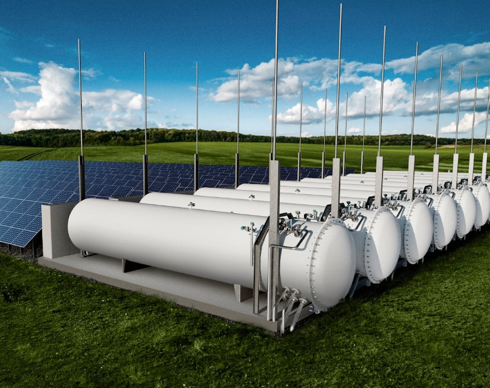
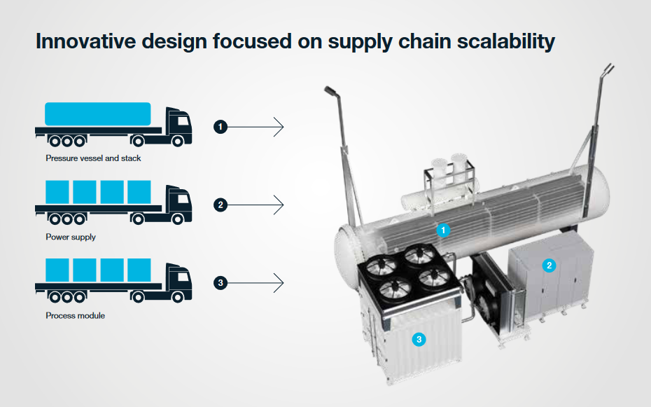
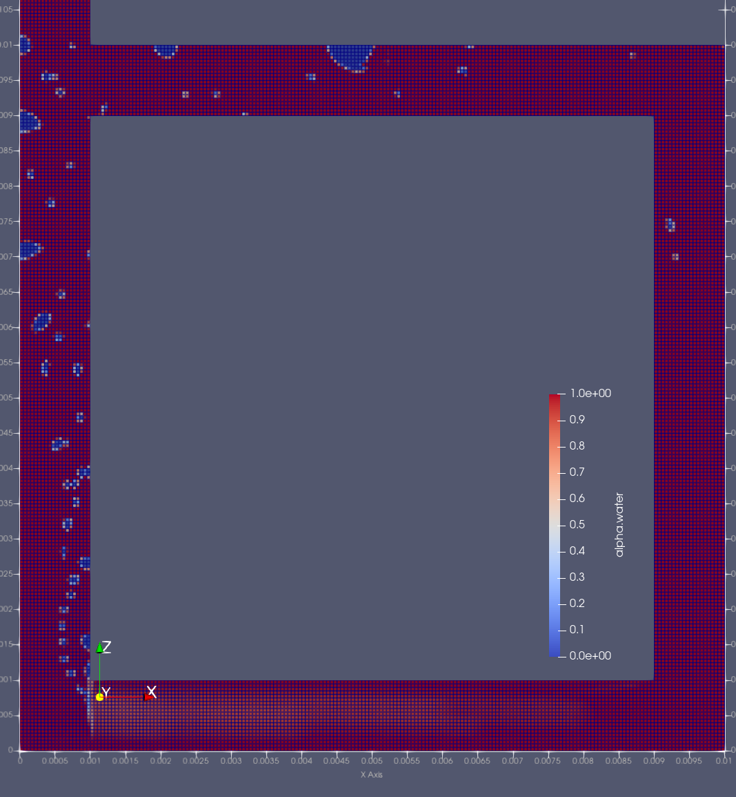
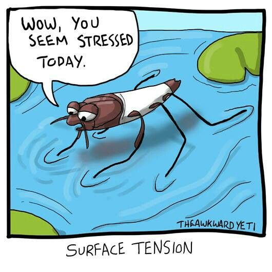
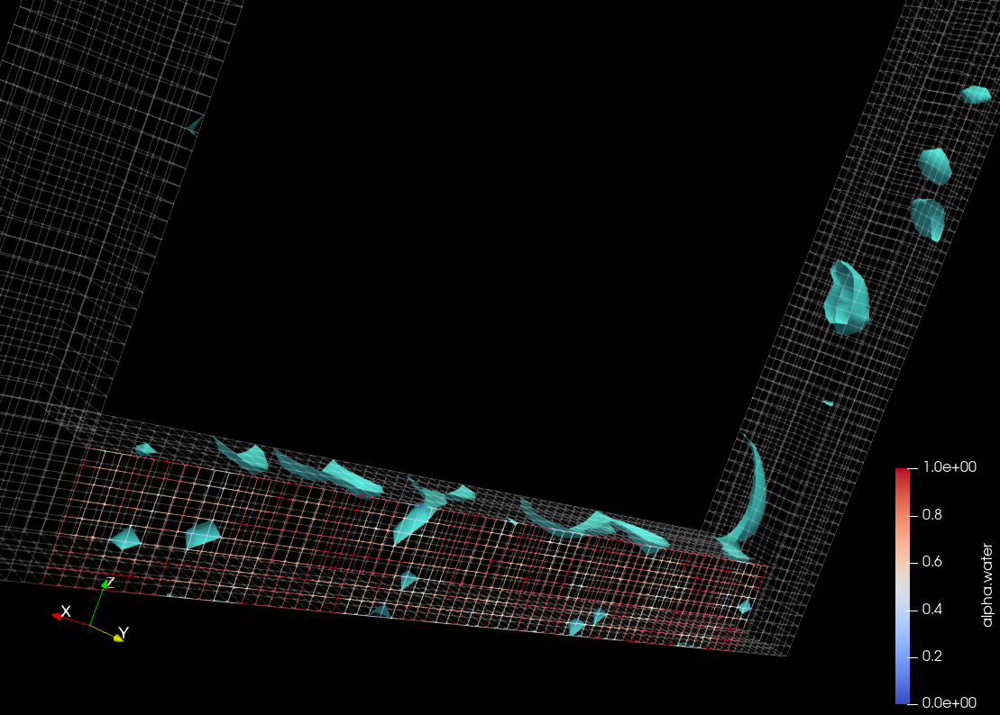
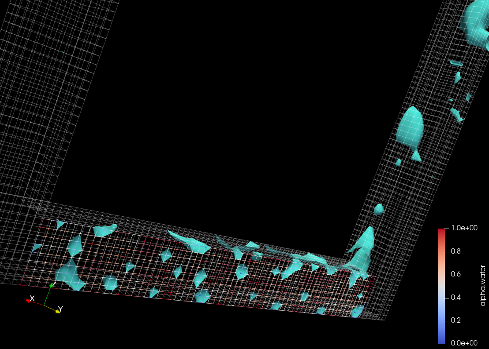
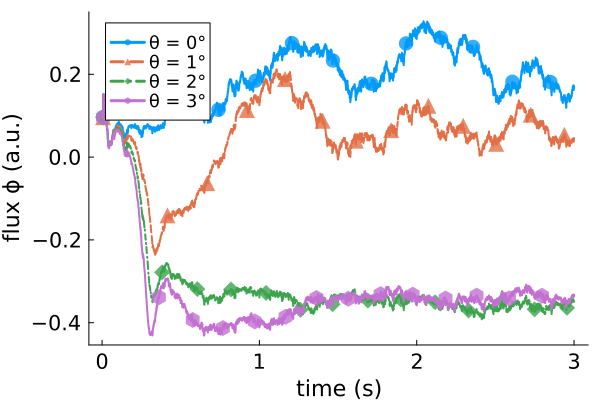
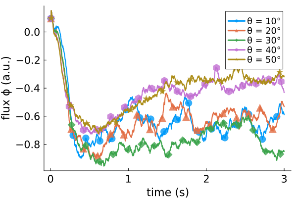

Buoyancy driven circulation in electrolysis cells
Two-phase flows with sharp interfaces and complex boundary conditions
Stefan Zitz*, Konstantinos Missios, Casper S. Hemmingsen, Kenny K. Nielsen, and Johan Roenby
Stiesdal's aim


Our aim

- Setup a simple simulation
- With the finite volume method
- And volume of fluid (VOF)
- In OpenFOAM
- Will it depend on $\mathbf{g}$?
- on the potential?
OpenFOAM
“OpenFOAM is the free, open source CFD software developed primarily by OpenCFD Ltd since 2004.”
$$\frac{\partial\rho}{\partial t} + \nabla \cdot (\rho \mathbf{u}) = 0\\ \frac{\partial}{\partial t}(\rho\mathbf{u}) + \nabla\cdot(\rho\mathbf{u}\mathbf{u}) = -\nabla p + \nabla\cdot\hat{\tau} + \rho\mathbf{g} + \mathbf{f} \\ \nabla\cdot\mathbf{u} = 0 $$ C. Navier, Mém. Acad. sci. Inst. Fr., 6 1823, G. Stokes, Trans. Cambridge Philos. Soc., 7 1842
OpenFOAM

$$\begin{align} \nabla\cdot\mathbf{u} &= 0 \\ \frac{\partial}{\partial t}(\rho\mathbf{u}) &+ \nabla\cdot(\rho\mathbf{u}\mathbf{u}) = -\nabla p + \nabla\cdot\hat{\tau}\\ &+ \rho\mathbf{g} + \mathbf{f}_{\sigma} \\ \mathbf{f}_{\sigma} &= \sigma\kappa\mathbf{n}\delta_S \\ \frac{\partial\alpha}{\partial t} &+ \nabla \cdot (\alpha \mathbf{u}) = 0 \end{align}$$
J. Roenby et al., R. Soc. Open Sci., 3(11) 2016, S. Popinet , Annu. Rev. Fluid Mech., 50(1) 2018
OpenFOAM

Active boundary condition
- Cells are nucleation sites
- Flow transports bubbles
- Activity ($\Gamma$) - different size distributions
OpenFOAM

Active boundary condition
- Cells are nucleation sites
- Flow transports bubbles
- Activity ($\Gamma$) - different size distributions
Related Research


- Derivation of powerlaws
- Plume profiles
A. Rajora & J.W. Haverkort, Int. J. Hydrog. Energy, 2023
Circular flows
Gravity

- Inclination angle $\theta$ breaks symmetry
- Small inclinations: bubbles in both arms
Gravity

- Inclination increases "downstream" flux
- Large $\theta$ promotes bubble trapping
Activity

- Bubbles coalesce too easy
- More production = larger fluctuations
construction sites
- Electrostatics
- Temperature
- Wettability
- Bubble sizes limited by mesh
Conclusion
- CFD simulation of a simple electrolizer cell
- Circular flow due to bubbles
- Critical angle for circulation
Thank you!
Questions? 🧐